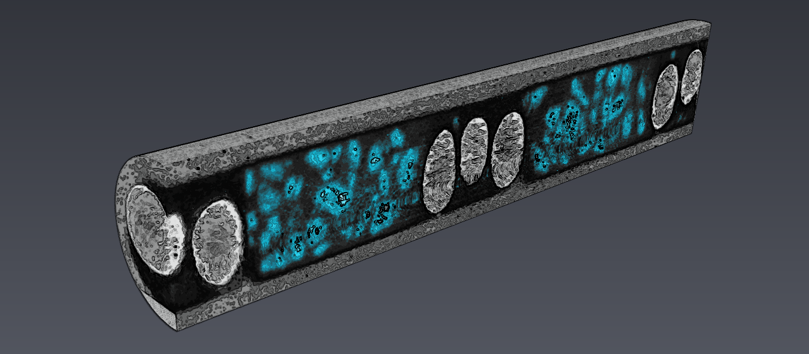

Hi, I'm Gerry Knapp, a senior mechanical engineering student at Louisiana State University. My passions lie in doing research, learning, and making ideas happen. I am currently applying to graduate school to get a PhD in materials science/engineering to study advanced manufacturing processes such additive manufacturing of exotic materials. If you have questions or want to talk, please get in touch; my contact information is below.
- GitHub
- Email: gknapp510@gmail.com
- Skype: gerryknapp
- Phone: +1 (225) 284-4173
- Résumé
I have always had a broad range of academic interests, which is why the multidisciplinary field of materials science and engineering appeals to me. During my time as a high school student at the Louisiana State University (LSU) Laboratory school and as an LSU undergraduate, I have been involved in a wide range of research projects in biological engineering, chemistry, civil engineering, and mechanical engineering—all of which have provided key elements to pursuing a career as materials science researcher.
My first experience working in a research lab was in a biological engineering laboratory while I was a high school student. I was interested in biomaterials and interviewed with a professor fabricating biomedical devices. Over that summer, I joined a team two high school teachers on an NSF-sponsored LA-SiGMA project to develop lesson plans and lab experiments for demonstrating microfluidic concepts and devices to high school students. Working with teachers as colleagues gave me key insights to the teaching process and made my learning more reflective.

I continued my work in this research lab for the two years of after arriving at LSU. I used photolithography to manufacture polymer-based microfluidic device molds and subsequently fabricated and characterized the actual devices. The goal was to create low-cost devices to improve performance of cryogenically-stored zebrafish zygote reactivation, which reduces biological sample waste. For part of this time I was funded through the Howard Hughes Medical Institute (HHMI) Summer Scholars program. I co-authored a paper titled “Microfluidics and numerical simulation as methods for standardization of zebrafish sperm cell activation,” published May 2015, in Biomedical Microdevices.
During a break from working in the biological research lab, my first year at LSU I worked on another research project, relating to Civil Engineering, as part of my Chancellor’s Research Scholarship. In this project, I developed a tablet application for building damage assessment after natural disasters such as hurricanes. While I was still interested in biology and biomaterials, this project offered a chance to learn about structural materials, and to indulge myself in learning a new technology. Over the year, I taught myself how to code in Java and worked with graduate students to make sure the application recorded all of the information they needed. While I determined that a computer science career was not for me, the experience showed me how a working knowledge of programming was critical to many facets of scientific research. The programming knowledge I gained in this project later qualified me to become part of a physical chemistry research group running materials analysis on a high performance computing cluster.
After taking a course in scientific visualization, I was offered a summer research internship with the course’s professor, Dr. Butler. There, I transferred existing algorithms for processing x-ray tomography data into a format that could work in parallel, high performance computing. In addition, I helped two high school teachers transfer the computer visualization aspect of the work into an eBook for their students. I worked in this research position while concurrently working part-time in the biological engineering laboratory, where I was training a new graduate student on the microfluidics project. The work with Dr. Butler led to co-authorship of a conference proceeding titled "Data Workflow and Visualization: X-Ray Interferometry, Vistrails and IPad/Android Collaboration” for the LA-SiGMA 2013 Symposium.
I decided materials science was the field I wanted to pursue for my graduate studies during a self-organized semester study abroad at UCBL 1 in Lyon, France, where I worked as a research assistant in a nanomaterials laboratory. My project was create hybrid carbon and boron-nitride nanotubes via electric arc synthesis. That semester was an intense training in chemistry, French, and the importance of celebrating research progress with champagne. Near the end of the semester, when looking at the nanotubes at 1,000,000x resolution on a Transmission Electron Microscope, it became clear to me I wanted to continue in the field.
When I returned to LSU, I was offered an undergraduate research assistant position with Dr. Butler to work on a W.M. Keck Foundation grant building a novel grating-based x-ray interferometry instrument to be used on the LSU synchrotron x-ray beamline. My main role was to work with a multi-disciplinary team of physicists, chemists, and an electrical engineer to create a mechanical design and assemble the instrument, but I also continued on the development of the data workflow and visualization. This work led to the creation of an instrument capable of low-dose phase contrast and dark field imaging that will allow for x-ray sensitive medical samples to be observed, and an increased capability for data processing documentation and repeatability. Overall, this work produced two poster presentations at LSU, a refereed extended abstract and poster presentation at the 2015 ITCMS conference in Quebec City, and an in-preparation paper on the first results of using the instrument for analyzing 3-D printed ABS parts produced by fused deposition modelling.
Academics
In addition to my mechanical engineering major, I am pursuing a minor in materials science/engineering. The extra courses I have taken to complete the minor have allowed me opportunities to learn how to carry out advanced materials analysis through techniques like Scanning Electron Microscopy and X-Ray Diffraction, while the main courses I have taken provided the core competencies any mechanical engineer should possess: strengths of materials, fluid mechanics, failure criterion, dynamic and kinematic studies, etc.
Professional Activity
The student American Society of Mechanical Engineers (ASME) chapter has played an important role in giving me a real-world point of view on engineer. Speakers from companies like Textron, Shell, and Cameron have provided many opportunities to learn about the various aspects of the petrochemical industry, engineering design, project management, and more. As a national member of ASME, I have participated in the ASME3D conference in Boston, MA. This was a unique experience where I was able to meet many professional engineers and listen to keynote speeches by the ASME leadership. Besides being a great networking opportunity, I was able to see role models in the form of the engineers at the forefront of the development and implementation of additive manufacturing technologies.
Internship
In addition to being active in ASME, to develop a better understanding of industry, I pursued and received a summer internship at Air Liquide, an industrial air producer. During my time as a reliability engineering intern, I was surprised at how small improvements in reliability, like a part lasting a month longer, could save significant physical and fiscal resources. This realization made me further value the importance of small improvements made possible through academic research, no matter how small they are.
Groupwork
Teamwork has been an important part of the engineering curriculum at LSU. Multiple group projects and labs have created opportunities to divide up work between team members, synergize the various skill sets of team members, and ultimately make a final product better than the individual parts could have created. The Sophomore Design project was the first real team project I encountered. Our group created a design for a low-cost radio-controlled UAV that would be able to pick up and deposit a payload of a camera for wildlife studies. Currently, I am the group leader for a multi-disciplinary senior design project to build a metal powder mixer to integration into a selective laser melting system (read: metal 3-D printer).
NSF I-Corps
Last, but not least, during the summer of 2015 I co-authored a successful NSF Innovation Corps (I-Corps) grant proposal, for which I served as the Entrepreneurial Lead. Participation in this program gave me an education in how to startup a business and the complexity of transferring academic research into marketable technologies. I have followed companies like MakerBot as they turned a technology into a successful business, and the mindset to help improve people’s lives through technology greatly appeals to me. Research with Dr. Butler had led to the development of quality assessment algorithms for 3-D printed parts, which appeared to have uses in industrial and commercial settings. Through one hundred interviews with potential customers across the country, and weekly progress presentations, I gained invaluable communication and marketing skills, and the knowledge necessary to determine how our technology could benefit industry. The interviews also provided many key insights into needs of the additive manufacturing industry that are directing my planned graduate research.
I have been fortunate to have participated in many excellent opportunities while at LSU, and have made an effort to make sure that others have the same opportunities that I have.
As a Residential Assistant in the Honors College Residential Hall in my sophomore year, I was responsible for the safety, well-being, and sense of community of the students in my hall. In my first semester, I noticed that many bright students in the Honors College were not taking advantage of the many resources available to them around campus just because they weren’t talking to faculty. With so many opportunities to do undergraduate research or find a mentor in a professor or instructor, I came up with the idea for a program to help incoming students achieve more by becoming comfortable with networking through faculty at the university. I interviewed many research faculty at LSU, and developed a new presentation and workshop for students on the benefits of interacting with faculty while studying at LSU. Since then, I have been asked to repeat this presentation to students three times through the LSU's Communication across the Curriculum center.

In a similar vein, I worked with the Office of Research and Economic Development to turn the successful application of our NSF I-Corps team into a catalyst for more entrepreneurial ventures to come from LSU. I have now spoken at two campus-wide seminars about our journey through the program, what we learned, and how it benefitted us, to help convince potential entrepreneurial mentors and LSU students and faculties who had research they might want to commercialize to become involved in I-Corps.
The Louisiana public school system often struggles to accommodate students who fall below their grade level and can be lacking in opportunities for hands-on STEM education. While at LSU, I have tutored students below grade level in reading and with English as Second Language. Currently, through the LSU Society of Peer Mentors, I go to local K-12 schools and teach students about magnetism, electronics, chemistry, and computer science. Outreach and tutoring has allowed me to see firsthand the curiosity and creativity of young students, and continuously inspires me to give back to the community.
I have had many roles within the LSU College of Engineering's "Encounter Engineering camp" for incoming freshman (originally created as part of an NSF STEP grant). This camp is a week long program that gives incoming students an opportunity to meet each other, learn study skills, learn from mentor students, and to generally get a taste of what college is going to be like. I have been a peer mentor for the students, and when the camp doubled in size, I was selected to be part of a four-person team to create the engineering design project that helps students develop teamwork and engineering problem solving skills.

Project Title
Project description.